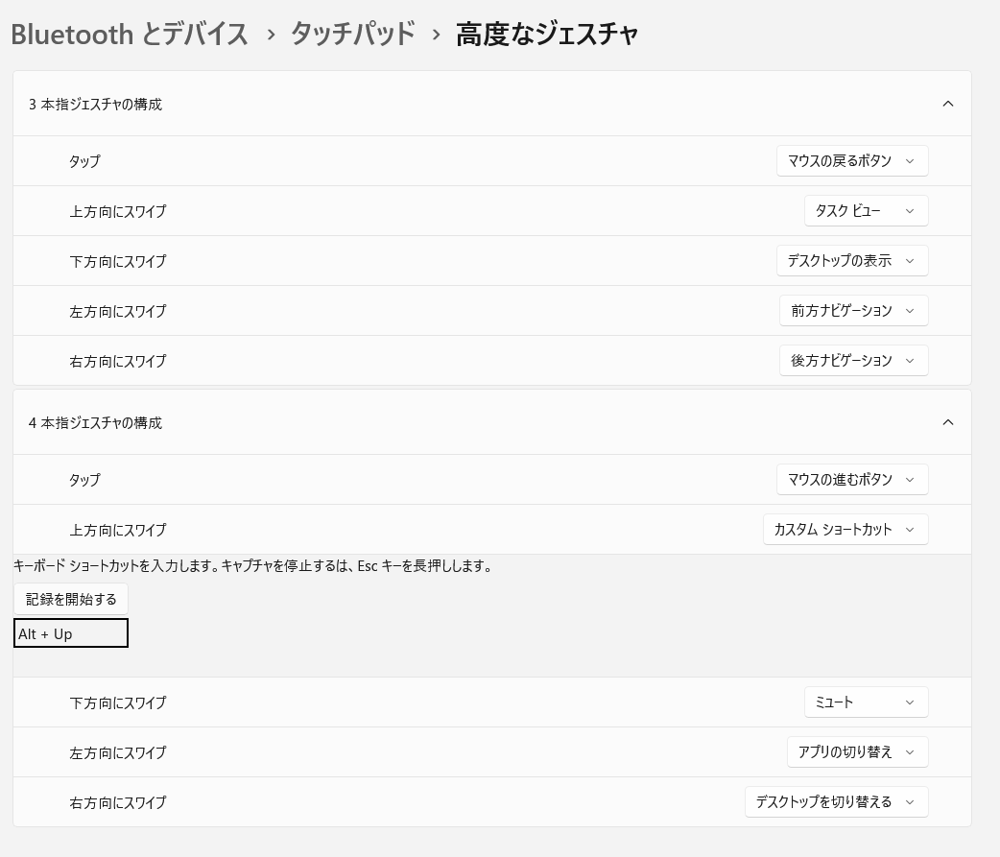

戻る、進むの機能割り当ては必須。なのだが、マウスの中央ボタンも捨てがたい・・・・。
Ideapadには、ALTキーが左側に一つしかない。矢印と反対側だ。なので、片手でALT＋←が難しい。
そこで、三本指タップあるいは、三本指スワイプだ。片手でできるし、背もたれに寄りかかって操作できる。
方法は、設定→デバイスとブルーツース→タッチパッド→高度なジェスチャ。

以上が、私のおすすめのカスタマイズです。
理由を説明しましょう。
３本指左右スワイプが、戻る、進むなのは当然でしょう。気になるのは、３本タップと４本タップにも戻る進むを割り当てていること。
Win11の設定などのところでは、３本タップでは戻れるが、スワイプでは戻れないためです。
4本スワイプ上をカスタマイズにして、一つ上の階層に戻るにしていますが、戻る・進むではいけないこともあるため、あったほうが良いと思い設定しています。４本のほうにしているのは、３本のほうだとわかりずらくなるためです。
さらに、３本スワイプ上にタスクタブを設定しているのは、これを設定しないと３本スワイプ下でデスクトップに戻った後に再びアプリに戻れないからです。これを設定しておけば、スワイプ上で戻れて楽なんです。
仮想デスクトップの切り替えを右スワイプにしているのも、意味があります。誤操作防止の効果があるからです。まぁ、指がタッチパッドに触れて、４本指スワイプの誤操作になる事はめったにないですが、４本指スワイプ右を何回やっても仮想デスクトップは切り替わらないのでイラつきません。
切り替えるためには、少しコツがいります。右にちょっとスワイプしてから、左にスワイプすると切り替えれます。２枚目までは簡単です。戻すときは単に右スワイプすればいいだけなのでもっと簡単です。難しいのは、２枚目から３枚目に行くこと。
一枚目は最初の右スワイプ大きくても問題なのですが、２枚目はほんのちょっとだけ右スワイプして左にスワイプするとできます。